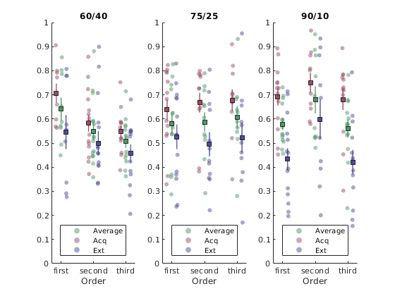

Order effect¶
without TA¶
addpath('/data/drive/DPhil/THESIS/Cross_study_analyses/learning-repo/scripts')
% load all data sets!
comp='onx';ca=1; pX_analysis_init;
% filter the data
% specify what data to EXCLUDE (this should be a json structure, but
% matlab...
sp = {
{{'study'}, {[1,2]}},
};
[SData] = pX_filter_data(sp, 'pX', 1);
disp('Only study III included')
subIDs = cellstr(SData.specID);
% It's possible to do the entire analyses using model-generated data
% data_type = 'real_data', 'RW_3_mle_n20', 'betaStSw_v2g_c_mle_n20',
% 'RW_6_volatility_mle_n20'
data = pX_build_dataset(subIDs, SData, 'real_data',0);
ans =
'9.6.0.1099231 (R2019a) Update 1'
Raw participants: 116
Excluded for missing anxiety scores:
'ss11'
'ss31'
Participans after anx exlc.: 114
Excluded for failure to distinguish harm from safe:
'f27'
'm01'
'm06'
'm29'
'm39'
'pl16'
'pl20'
'ss18'
'ss19'
'ss7'
Participans after dist exlc.: 104
pl9 ... excluding for misunderstanding the task
ss8_bl7525 ... excluding for missing more than 50% of data
ss4_bl6040 ... excluding for missing more than 50% of data
m01_v1 ... excluding for missing more than 50% of data
m13_v1 ... excluding for missing more than 50% of data
f39_v1 ... excluding for missing more than 50% of data
f38_v1 ... excluding for missing more than 50% of data
Participans after all exlc.: 34
Only study III included
Collecting data, make a coffee and grab a croissant...
dloc = data(find(data.phase~=0 & data.Trial_Type==3),:);
[GS, Gkey, S, Skey, mle] = pX_get_stats(dloc, dloc.prob, {'order_str', 'contingency'});
[GS, Gkey, S_p, Skey_p, mle] = pX_get_stats(dloc, dloc.prob, {'order_str', 'contingency', 'phase_str', 'id'});
%[GS_m, Gkey_m, S_m, Skey_m, mle] = pX_get_stats(dloc, fitted(m1), {'order_str', 'contingency'});
ostr = unique(Gkey.order_str);
cstr = unique(Gkey.contingency);
f=figure;
cf=struct;
cf.opacity =0.5;
cf.legendmark = 'on';
for b = 1:numel(cstr)
subplot(1,3,b)
for or = 1:numel(ostr)
if or == 1; cf.legendmark='on'; else cf.legendmark='off';end
id = find( ismember(Skey.order_str,ostr{or}) & ismember(Skey.contingency, cstr{b}) );
plot_vertical_jittered_column(or, S(id), [0.3 0.6 0.4], cf)
id_a = find(ismember(Skey_p.phase_str, 'acq') & ismember(Skey_p.order_str,ostr{or}) & ismember(Skey_p.contingency, cstr{b}) );
plot_vertical_jittered_column(or-0.15, S_p(id_a), [0.6 0.3 0.4], cf)
id_b = find(ismember(Skey_p.phase_str, 'ext') & ismember(Skey_p.order_str,ostr{or}) & ismember(Skey_p.contingency, cstr{b}) );
plot_vertical_jittered_column(or+0.15, S_p(id_b), [0.3 0.3 0.6], cf)
legend('Average', 'Acq', 'Ext', 'location', 'south');
end
t=gca; t.XTick=1:3; t.XTickLabel=ostr;
xlabel('Order');
ylim([0 1]); xlim([0.7 3.3]);
title(cstr{b});
end
f.Position(3) = 600;
f.Position(4) = 200;

cf= [];
cf.bycat=1;
cf.cat ={'contingency'};
Skey_p.prob = S_p;
[m] = pX_report_stats(Skey_p, 'prob', {'order_str', 'contingency', 'phase_str'}, {'id'}, cf);
=====MAIN MODEL=====
mm =
Linear mixed-effects model fit by ML
Model information:
Number of observations 222
Fixed effects coefficients 18
Random effects coefficients 37
Covariance parameters 2
Formula:
Linear Mixed Formula with 4 predictors.
Model fit statistics:
AIC BIC LogLikelihood Deviance
-184.32 -116.27 112.16 -224.32
Fixed effects coefficients (95% CIs):
Name Estimate
'(Intercept)' 0.55616
'order_str_second' 0.043992
'order_str_first' 0.10849
'contingency_75/25' 0.091128
'contingency_90/10' 0.14183
'phase_str_ext' -0.090868
'order_str_second:contingency_75/25' -0.022195
'order_str_first:contingency_75/25' -0.095866
'order_str_second:contingency_90/10' -0.021126
'order_str_first:contingency_90/10' -0.1107
'order_str_second:phase_str_ext' 0.0083084
'order_str_first:phase_str_ext' -0.070492
'contingency_75/25:phase_str_ext' -0.064463
'contingency_90/10:phase_str_ext' -0.16932
'order_str_second:contingency_75/25:phase_str_ext' -0.024934
'order_str_first:contingency_75/25:phase_str_ext' 0.11392
'order_str_second:contingency_90/10:phase_str_ext' 0.10048
'order_str_first:contingency_90/10:phase_str_ext' 0.07272
SE tStat DF pValue Lower Upper
0.041388 13.438 204 6.6506e-30 0.47456 0.63777
0.05404 0.81407 204 0.41655 -0.062556 0.15054
0.061394 1.7672 204 0.078691 -0.012553 0.22954
0.058167 1.5667 204 0.11875 -0.023558 0.20581
0.05585 2.5395 204 0.011847 0.031712 0.25195
0.050657 -1.7938 204 0.074325 -0.19075 0.0090094
0.084039 -0.2641 204 0.79197 -0.18789 0.1435
0.086741 -1.1052 204 0.27037 -0.26689 0.075157
0.084342 -0.25049 204 0.80246 -0.18742 0.14517
0.085726 -1.2913 204 0.19805 -0.27972 0.058321
0.06921 0.12005 204 0.90456 -0.12815 0.14477
0.0792 -0.89005 204 0.37449 -0.22665 0.085664
0.074825 -0.86152 204 0.38996 -0.21199 0.083066
0.071639 -2.3635 204 0.019044 -0.31057 -0.02807
0.10297 -0.24215 204 0.80891 -0.22795 0.17809
0.10811 1.0537 204 0.29326 -0.099241 0.32708
0.1034 0.97172 204 0.33234 -0.1034 0.30435
0.10593 0.68648 204 0.49319 -0.13614 0.28158
Random effects covariance parameters (95% CIs):
Group: id (37 Levels)
Name1 Name2 Type Estimate Lower
'(Intercept)' '(Intercept)' 'std' 0.09658 0.071189
Upper
0.13103
Group: Error
Name Estimate Lower Upper
'Res Std' 0.12915 0.11658 0.14307
ans =
ANOVA MARGINAL TESTS: DFMETHOD = 'RESIDUAL'
Term FStat DF1 DF2 pValue
'(Intercept)' 180.57 1 204 6.6506e-30
'order_str' 1.5616 2 204 0.21229
'contingency' 3.3027 2 204 0.03876
'phase_str' 3.2177 1 204 0.074325
'order_str:contingency' 0.52263 4 204 0.7192
'order_str:phase_str' 0.58055 2 204 0.56051
'contingency:phase_str' 2.8403 2 204 0.060722
'order_str:contingency:phase_str' 0.92162 4 204 0.4523
=====POST-HOC: contingency:60/40=====
ans =
ANOVA MARGINAL TESTS: DFMETHOD = 'RESIDUAL'
Term FStat DF1 DF2 pValue
'(Intercept)' 181.81 1 68 6.8726e-21
'order_str' 3.3366 2 68 0.041465
'phase_str' 5.0172 1 68 0.02837
'order_str:phase_str' 0.9052 2 68 0.40928
==================================================
=====POST-HOC: contingency:75/25=====
ans =
ANOVA MARGINAL TESTS: DFMETHOD = 'RESIDUAL'
Term FStat DF1 DF2 pValue
'(Intercept)' 197.02 1 68 9.1189e-22
'order_str' 0.19989 2 68 0.8193
'phase_str' 15.786 1 68 0.00017399
'order_str:phase_str' 0.56075 2 68 0.5734
==================================================
=====POST-HOC: contingency:90/10=====
ans =
ANOVA MARGINAL TESTS: DFMETHOD = 'RESIDUAL'
Term FStat DF1 DF2 pValue
'(Intercept)' 237.83 1 68 6.8499e-24
'order_str' 0.53759 2 68 0.58661
'phase_str' 20.964 1 68 2.0496e-05
'order_str:phase_str' 0.95155 2 68 0.39122
==================================================
with TA¶
[GS, Gkey, S_p, Skey_p, mle] = pX_get_stats(dloc, dloc.prob, {'order_str', 'contingency', 'phase_str', 'ta', 'id'});
cf= [];
cf.bycat=1;
cf.cat ={'contingency'};
Skey_p.prob = S_p;
[m] = pX_report_stats(Skey_p, 'prob', {'order_str', 'ta', 'contingency', 'phase_str'}, {'id'}, cf);